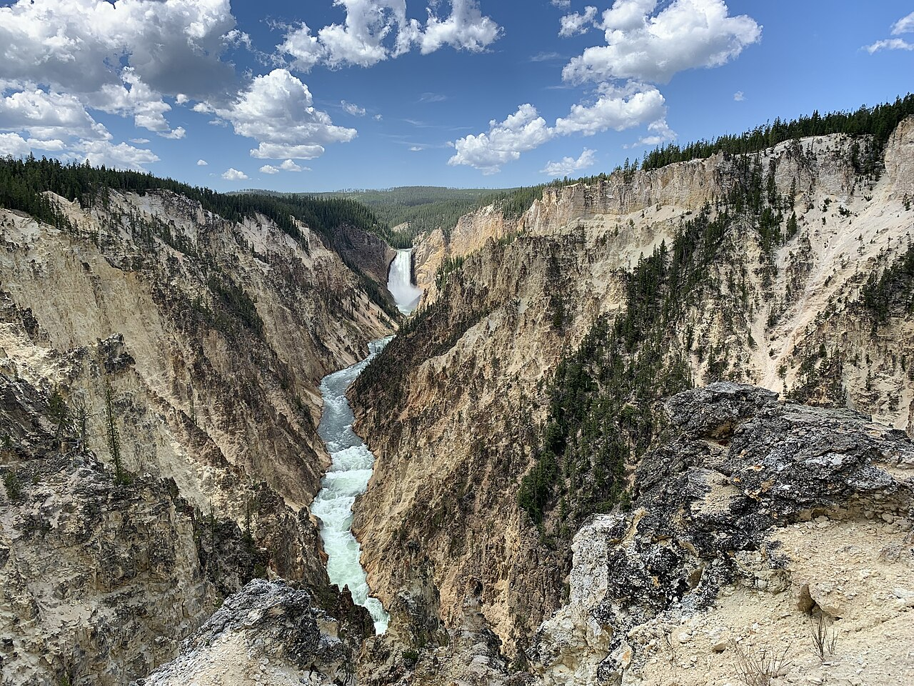
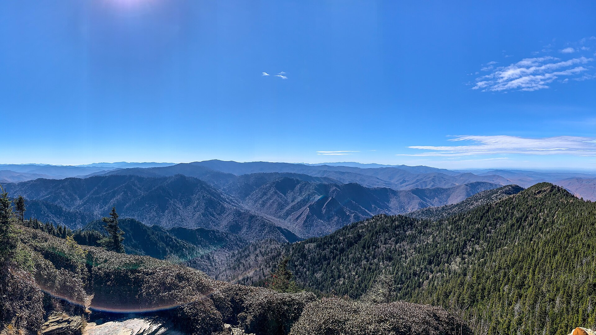
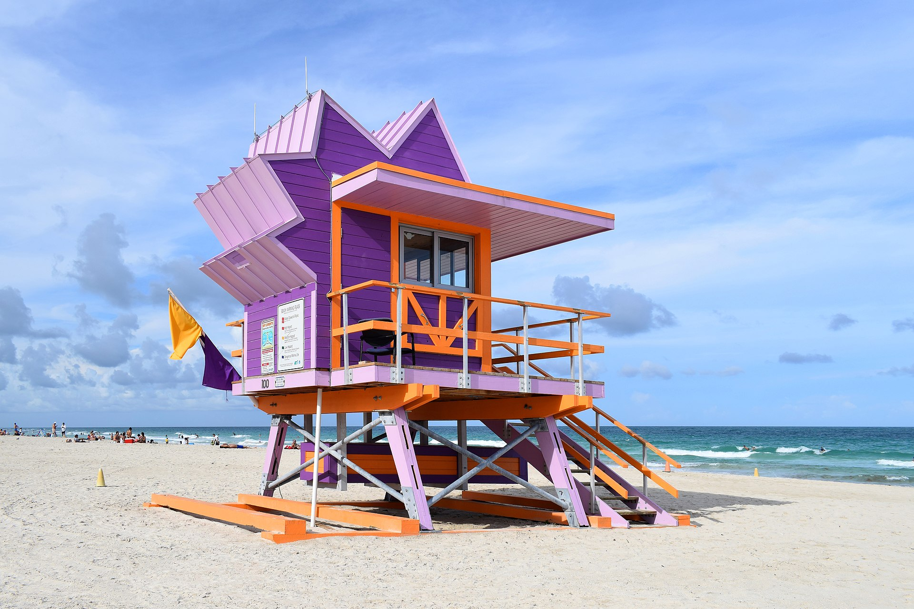

Tourist attractions come in various forms, each offering a unique experience. Historical sites, like ancient ruins and museums, invite travelers to step back in time and explore rich cultures. Natural wonders, such as national parks and breathtaking landscapes, provide a chance to connect with nature and enjoy outdoor activities. For those seeking excitement, amusement parks and adventure sports offer thrilling experiences. Additionally, cultural attractions, including festivals and local markets, allow visitors to immerse themselves in the traditions and flavors of a destination. No matter your preference, there's an attraction that awaits to spark your curiosity!
Yellowstone National Park in the United States was the first national park in the world.
Great Smoky Mountains National Park in the United States is the most visited national park in the world.
Royal International Air Tattoo, England (2006)
The Göbekli Tepe, believed to be the world's oldest manmade structure.

A lifeguard tower at Miami Beach, the most popular beach in the world.
Each country is home to a myriad of tourist attractions that reflect its unique culture and history, enticing travelers from around the globe. From iconic landmarks and breathtaking natural wonders to hidden gems and vibrant local experiences, there's something to captivate every visitor. This is just a part of all the attractions that await exploration, inviting adventurers to uncover the diverse beauty our world has to offer.